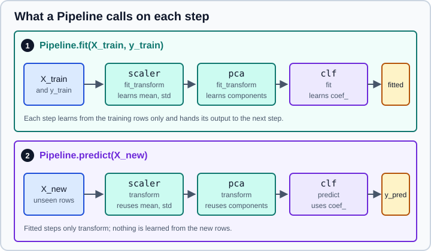

Pipelines
|
This content was generated with the assistance of AI and should be verified against the official documentation before being relied on in production. |
This page targets NumPy 2.5, pandas 3.1 and scikit-learn 1.9, and it was checked in October 2026. Examples target Python 3.13 or 3.14. Every Python example was run on Python 3.13.18, NumPy 2.5.4, pandas 3.1.0 and scikit-learn 1.9.1. The package is called scikit-learn, it is installed with pip install scikit-learn and it is imported as sklearn.
A model is rarely a single estimator. Real work is a chain: impute, encode, scale, maybe reduce the dimension or select features, then fit a classifier or regressor. A Pipeline bundles that chain into one estimator with the usual fit, predict and score. Doing so removes the most common source of inflated results (leakage from preprocessing fitted on the wrong rows), lets cross-validation and hyperparameter search treat the whole chain as one unit, and means that what is trained is exactly what is deployed.
The estimator vocabulary used here (fit, transform, get_params) is explained on The Estimator API and get_params, set_params & clone. Branching a pipeline by column type is the subject of ColumnTransformer & Heterogeneous Data; this page covers the sequential building block and the other composite estimators of sklearn.pipeline and sklearn.compose.
Why use a pipeline
The scikit-learn guide to common pitfalls states the rule that pipelines enforce: preprocessing steps that learn from data must be fitted on the training data only. Written by hand, that means remembering to call fit_transform on the training part and transform on everything else, in the right order, in every experiment and in production. A Pipeline does it for you, including inside cross_val_score and GridSearchCV, where every fold refits all the steps on its own training rows. The leakage experiments are on Common Pitfalls: Leakage & Randomness and Feature Engineering.
Further benefits: a single fit call and a single predict call, one object to pickle (see Model Persistence & Security), parameters of every step searchable together, and a readable HTML diagram in notebooks.

Original drawing. Marker 1 is the training phase, marker 2 the prediction phase.
Building a Pipeline
Pipeline takes a list of (name, estimator) pairs. All steps except the last must be transformers, that is, they must implement fit and transform; the last step can be any estimator (a transformer, a classifier, a regressor, a clustering model). Names must be unique, must not contain double underscores and must not clash with constructor parameters of the pipeline.
make_pipeline is the short form: it names the steps automatically with the lower-cased class name.
from sklearn.datasets import load_breast_cancer
from sklearn.decomposition import PCA
from sklearn.linear_model import LogisticRegression
from sklearn.model_selection import train_test_split
from sklearn.pipeline import Pipeline, make_pipeline
from sklearn.preprocessing import StandardScaler
X, y = load_breast_cancer(return_X_y=True, as_frame=True)
X_train, X_test, y_train, y_test = train_test_split(X, y, random_state=0, stratify=y)
pipe = Pipeline([
("scale", StandardScaler()),
("pca", PCA(n_components=5)),
("clf", LogisticRegression(max_iter=1000)),
])
pipe.fit(X_train, y_train)
print(round(pipe.score(X_test, y_test), 3))
short = make_pipeline(StandardScaler(), PCA(), LogisticRegression())
print([name for name, _ in short.steps])0.965
['standardscaler', 'pca', 'logisticregression']Use Pipeline when you want to choose the names (they appear in parameter names and in grid-search results) and make_pipeline for quick work. If the same class appears twice in make_pipeline, the names get a numeric suffix (standardscaler-1, standardscaler-2), which is a reason to prefer explicit names in long pipelines.
A pipeline exposes the methods of its final step when they exist, so it can be used wherever the final estimator can:
| Method | What happens |
|---|---|
|
For each intermediate step: |
|
Available if the last step has them. All intermediate steps |
|
Available if every step (including the last) has them. |
|
Chained versions, available under the same condition as their single steps. |
|
Follows the names through the transformers, for example through a one-hot encoder. |
|
Taken from the last or first step as appropriate. |
Looking inside a pipeline
Steps can be reached by name through named_steps, by position, or by slicing. A slice returns a new Pipeline of the selected steps (sharing the fitted step objects), which is the standard way to inspect or reuse a part of a fitted pipeline.
from sklearn.datasets import load_breast_cancer
from sklearn.decomposition import PCA
from sklearn.linear_model import LogisticRegression
from sklearn.pipeline import Pipeline
from sklearn.preprocessing import StandardScaler
X, y = load_breast_cancer(return_X_y=True, as_frame=True)
pipe = Pipeline([
("scale", StandardScaler()),
("pca", PCA(n_components=5)),
("clf", LogisticRegression(max_iter=1000)),
]).fit(X, y)
print(list(pipe.named_steps))
print(pipe["scale"], pipe[-1])
print(len(pipe), pipe.steps[0][0])
features = pipe[:-1].transform(X) # everything except the classifier
print(features.shape)
print(pipe[:-1].get_feature_names_out())
print(pipe["clf"].coef_.shape)['scale', 'pca', 'clf']
StandardScaler() LogisticRegression(max_iter=1000)
3 scale
(569, 5)
['pca0' 'pca1' 'pca2' 'pca3' 'pca4']
(1, 5)Source: scikit-learn: Accessing steps.
pipe[:-1] is the idiom for "the preprocessing part", for example to look at the transformed data or to feed the features to something that is not a scikit-learn estimator. Indexing with a string gives the step object, so fitted attributes such as coef_ or explained_variance_ratio_ are available as pipe["clf"].coef_.
Parameters and the double underscore
Every parameter of every step is reachable with the name step__parameter, nested as deeply as needed (columntransformer__num__simpleimputer__strategy). get_params() lists them all, set_params changes them, and GridSearchCV and RandomizedSearchCV use the same names in their grids. Setting a step name itself replaces that step.
from sklearn.datasets import load_breast_cancer
from sklearn.decomposition import PCA
from sklearn.linear_model import LogisticRegression
from sklearn.model_selection import GridSearchCV, train_test_split
from sklearn.pipeline import Pipeline
from sklearn.preprocessing import StandardScaler
X, y = load_breast_cancer(return_X_y=True, as_frame=True)
X_train, X_test, y_train, y_test = train_test_split(X, y, random_state=0, stratify=y)
pipe = Pipeline([
("scale", StandardScaler()),
("pca", PCA()),
("clf", LogisticRegression(max_iter=1000)),
])
grid = {
"pca": [PCA(n_components=5), "passthrough"], # replace the step, or drop it
"clf__C": [0.1, 1, 10],
}
search = GridSearchCV(pipe, grid, cv=5).fit(X_train, y_train)
print(search.best_params_)
print(round(search.best_score_, 3), round(search.score(X_test, y_test), 3)){'clf__C': 0.1, 'pca': 'passthrough'}
0.979 0.958Three points follow from the example:
-
A step can be replaced by another estimator (a different
PCAhere, or a whole different model) and removed by setting it to"passthrough"(the older spellingNonealso works for transformers). The search therefore compares not only parameters but also pipeline structures. -
The scaler and PCA are refitted on the training part of each of the five folds, so the cross-validation score
0.979is not contaminated by the validation rows. The final0.958is on a test set that played no role in any of it. -
Here the best candidate has no dimensionality reduction at all. Reduction is a hypothesis to test, not a default.
set_params on an already fitted pipeline changes the parameter but not the fitted state. The step is only refitted at the next fit, so inspect results after refitting:
import numpy as np
from sklearn.decomposition import PCA
from sklearn.linear_model import LogisticRegression
from sklearn.pipeline import make_pipeline
rng = np.random.default_rng(0)
X, y = rng.normal(size=(50, 4)), np.arange(50) % 2
pipe = make_pipeline(PCA(n_components=3), LogisticRegression()).fit(X, y)
pipe.set_params(pca__n_components=2)
print(pipe[:-1].transform(X).shape) # still the old fit
pipe.fit(X, y)
print(pipe[:-1].transform(X).shape) # refitted(50, 3)
(50, 2)Source: scikit-learn: Nested parameters.
Caching intermediate results
A search over the final estimator’s parameters refits the same expensive preprocessing for every candidate. The memory argument stores the output of each fitted transformer on disk (through joblib.Memory) and reuses it when the same transformer is fitted again on the same data with the same parameters. Pass a directory path or a joblib.Memory object.
import tempfile
from sklearn.base import BaseEstimator, TransformerMixin
from sklearn.datasets import load_diabetes
from sklearn.linear_model import Ridge
from sklearn.pipeline import Pipeline
class NoisyScaler(TransformerMixin, BaseEstimator):
"""A standardiser that announces each real fit."""
def __init__(self, factor=1.0):
self.factor = factor
def fit(self, X, y=None):
print(" fitting NoisyScaler")
self.mean_, self.std_ = X.mean(axis=0), X.std(axis=0)
return self
def transform(self, X):
return (X - self.mean_) / self.std_ * self.factor
X, y = load_diabetes(return_X_y=True)
with tempfile.TemporaryDirectory() as cache:
pipe = Pipeline([("scale", NoisyScaler()), ("ridge", Ridge())], memory=cache)
for alpha in (0.1, 1.0, 10.0):
print("alpha", alpha)
pipe.set_params(ridge__alpha=alpha).fit(X, y)
print("a transformer parameter changed:")
pipe.set_params(scale__factor=2.0).fit(X, y)alpha 0.1
fitting NoisyScaler
alpha 1.0
alpha 10.0
a transformer parameter changed:
fitting NoisyScalerSource: scikit-learn: Caching transformers.
The expensive step ran once for three values of alpha, and again only when its own parameter changed. Caching pays off only when the transformer is slow (a large decomposition, a heavy embedding) and the search varies later steps; for a fast scaler the disk round trip costs more than it saves. Because the cache stores fitted clones, do not rely on inspecting the transformer object you passed in. Use named_steps of the fitted pipeline.
Seeing what runs: verbose and the HTML diagram
verbose=True prints the time spent in each step while fitting, which helps to find the slow one.
from sklearn.datasets import load_breast_cancer
from sklearn.linear_model import LogisticRegression
from sklearn.pipeline import Pipeline
from sklearn.preprocessing import StandardScaler
X, y = load_breast_cancer(return_X_y=True)
Pipeline(
[("scale", StandardScaler()), ("clf", LogisticRegression(max_iter=1000))],
verbose=True,
).fit(X, y)[Pipeline] ............. (step 1 of 2) Processing scale, total= 0.0s
[Pipeline] ............... (step 2 of 2) Processing clf, total= 0.0sSource: scikit-learn: Pipeline.
In a notebook an unfitted or fitted pipeline displays as an interactive diagram of boxes (set_config(display="diagram") is the default; "text" gives the plain representation). In 1.9 the diagram of a ColumnTransformer or FeatureUnion also lists the names of its output features, with a copy button. Printing repr(pipe) gives the text form for logs.
Fit parameters and metadata
Some estimators take extra arguments in fit, the commonest being sample_weight. By default a pipeline routes these with the prefixed name step__argument:
import numpy as np
from sklearn.datasets import load_breast_cancer
from sklearn.linear_model import LogisticRegression
from sklearn.pipeline import Pipeline
from sklearn.preprocessing import StandardScaler
X, y = load_breast_cancer(return_X_y=True)
weights = np.where(y == 1, 1.0, 2.0) # weight the minority class more
pipe = Pipeline([("scale", StandardScaler()), ("clf", LogisticRegression(max_iter=1000))])
pipe.fit(X, y, clf__sample_weight=weights)
print(pipe["clf"].n_iter_)[19]This prefixing works for fit only. For metadata that must also reach scorers, splitters (groups) or other methods, scikit-learn has an opt-in system called metadata routing (sklearn.set_config(enable_metadata_routing=True)), described on Metadata Routing. With routing enabled, Pipeline(transform_input=[...]) additionally passes the named metadata (for example a validation set) through the earlier steps before the step that consumes it.
FeatureUnion: transformers side by side
A Pipeline is sequential. FeatureUnion applies several transformers to the same input in parallel and concatenates their outputs column-wise. Use it to combine different views of the same data, for example PCA components plus the best original features. The make_union helper names the parts automatically. With n_jobs the transformers run in parallel, and transformer_weights scales each block.
from sklearn.datasets import load_breast_cancer
from sklearn.decomposition import PCA
from sklearn.feature_selection import SelectKBest
from sklearn.model_selection import cross_val_score
from sklearn.pipeline import FeatureUnion, Pipeline
from sklearn.preprocessing import StandardScaler
from sklearn.linear_model import LogisticRegression
X, y = load_breast_cancer(return_X_y=True, as_frame=True)
combined = FeatureUnion([
("pca", PCA(n_components=2)),
("best", SelectKBest(k=3)),
])
model = Pipeline([
("scale", StandardScaler()),
("features", combined),
("clf", LogisticRegression(max_iter=1000)),
])
print(model[:-1].fit_transform(X, y).shape)
print(model[:-1].get_feature_names_out())
print(cross_val_score(model, X, y, cv=5).mean().round(3))(569, 5)
['pca__pca0' 'pca__pca1' 'best__mean concave points'
'best__worst perimeter' 'best__worst concave points']
0.949The union of two transformers both fitted on the whole input is different from routing different columns to different transformers. When the pieces apply to different columns (numeric versus text versus categorical), ColumnTransformer is the right tool, and it is also the replacement for the old pattern of writing a DataFrameSelector class and putting it in front of each branch of a FeatureUnion. See ColumnTransformer & Heterogeneous Data.
TransformedTargetRegressor: transforming y
Pipelines transform X. A regression target that is strongly skewed is often modelled better after a transformation such as a logarithm, which raises the question of getting predictions back on the original scale. TransformedTargetRegressor wraps a regressor (or a whole pipeline), transforms y before fitting, and applies the inverse in predict. Give either a func and inverse_func pair or a transformer object.
import numpy as np
from sklearn.compose import TransformedTargetRegressor
from sklearn.linear_model import LinearRegression
from sklearn.model_selection import cross_val_score
from sklearn.pipeline import make_pipeline
from sklearn.preprocessing import StandardScaler
rng = np.random.default_rng(0)
X = rng.uniform(0, 3, size=(500, 2))
y = np.exp(1.2 * X[:, 0] + 0.5 * X[:, 1] + 0.2 * rng.normal(size=500))
plain = make_pipeline(StandardScaler(), LinearRegression())
logged = TransformedTargetRegressor(regressor=plain, func=np.log, inverse_func=np.exp)
for name, model in [("plain", plain), ("log target", logged)]:
r2 = cross_val_score(model, X, y, cv=5, scoring="r2").mean()
print(f"{name:10s} R2 {r2:.3f}")
logged.fit(X[:400], y[:400])
print(logged.predict(X[400:403]).round(1), y[400:403].round(1))plain R2 0.697
log target R2 0.916
[56.1 5.6 17.6] [59. 6. 16.5]The two arrays are the predictions on three held-out rows and the true values. The reported R2 is computed on the original scale in both cases, so the numbers are comparable. By default check_inverse=True verifies on a sample that inverse_func(func(y)) returns y and warns if not. TransformedTargetRegressor is for regression targets.
What a pipeline cannot do
-
Change the number of rows. Intermediate steps must return as many rows as they receive, and a step cannot modify
y. Resampling for imbalanced classes (over- or under-sampling) therefore does not fit in the scikit-learnPipeline; the third-party imbalanced-learn package provides its own pipeline class for that. For many class-imbalance problems, class weights or a tuned decision threshold are simpler, see Tuning the Decision Threshold. -
Take estimator classes. Passing
StandardScalerinstead ofStandardScaler()is a common typo; version 1.9 raises a clearer error for it. -
Share fitted state between branches. Each branch of a
FeatureUnionorColumnTransformeris fitted independently. -
Skip fitting. A pipeline that contains an already fitted model as its last step still refits it. To reuse a fitted model unchanged, wrap it in
FrozenEstimator(see FrozenEstimator).
Pitfalls
-
Preprocessing outside the pipeline.
X_scaled = StandardScaler().fit_transform(X)followed by cross-validation leaks. Put the scaler in the pipeline. -
Forgetting to refit after
set_params. The fitted state is not updated. -
Misspelt parameter names.
clf_C(one underscore) raisesValueError: Invalid parameter. The message lists the valid names. -
Duplicate step names. In
make_pipeline, the same class twice receives suffixes; refer to steps by the generated names or choose names yourself. -
Large pipelines pickled with caches or data. Keep input data out of custom transformers' attributes, so that the saved model stays small.
-
Pipelines of different scikit-learn versions. A pickled pipeline is only safe to load with the version that wrote it.
-
Reading
feature_importances_through the pipeline without names. Usepipe[:-1].get_feature_names_out()to label the columns that reach the last step.
Where older books and tutorials are outdated
| Older statement | Current practice (scikit-learn 1.9) |
|---|---|
|
|
A custom |
|
|
|
|
Both moved to |
|
Slicing ( |
|
|
Pipelines need numeric NumPy arrays and column indices. |
Data frames flow through with their column names ( |
Fit parameters always as |
Still works for |